Aspects of Neuroscience conference satellite event
17-19th November 2017 @ University of Warsaw
The call for proposals for the AoN Brainhack Warsaw 2017 is now open!
On the weekend of 17-19th November 2017, the first edition of AoN Brainhack Warsaw will take place. During this two-day event dedicated to students and PhD students, we will work in teams on neuroscience-related projects.
The aim of the event is to meet new, enthusiastic researchers, make new friendships in academia, learn, share the knowledge on data mining and brain research, but also promote open science in the spirit of the whole Brainhack community (Craddock et al., 2016). Attendees of various backgrounds are welcome to join!
By submitting your own, genuine research project, you can gain a priceless leadership experience as you will manage a group of researchers at our two-day event.
Please note AoN Brainhack Warsaw 2017 is a satellite event for the interdisciplinary Aspects of Neuroscience conference which will take place on 24-26th November 2017 in Warsaw. Participation in the conference is not mandatory to take part in Brainhack but we encourage to also consider this.
Deadline for project proposals: 01.09.2017
Announcement of projects: 15.09.2017
Deadline for participant registration: 01.11.2017
Please send the project proposals and all the related questions at the mailing address: brainhackwarsaw@gmail.com
Also, please team up with us! Join our channel (#brainhack-warsaw-2017) on Brainhack Slack for updated information on the developing Hackathon content and to contribute your own ideas.
Venue
Brainhack will take place at the University of Warsaw, Faculty of Physics, Pasteura 5, 02-093 Warsaw, Poland. Additional information how to get to Warsaw and university campus can be found at the AoN website.
Speakers
Doing open science for your own benefit
Abstract: Everyday cognition involves a large variety of concurrent neural processes that handle an incredible amount of sensory inputs in order to generate appropriate responses when interacting with the environment. It can be argued that studying any of these aspects of cognition in isolation, as it is often the case in feature-deprived laboratory experiments, yields an over-simplified or over-specialized understanding of the true nature of brain function. In order to fully understand “how the brain works”, it is essential to study the complex inter-play of cognitive processes in a rich natural environment and go beyond the localization of individual aspects of brain function. I will outline a strategy to approach this herculean task that is based on the core principles of open-science and aims to enable collaboration between research groups and disciplines.
Bio: Michael obtained his PhD in 2009 from Institute of Psychology, Otto-von-Guericke-University in Magdeburg, Germany. Today, he has a Junior professor position at his Alma Mater. Dr Hanke is an expert in sensory processing in vision and other modalities, and in sensory representations in the cortex. He is also actively promoting the ideas of open and reproducible science, and was one of the founders of the Brainhack organization which we represent at the AoN Brainhack Warsaw.
Shooting for the stars: Moving from reproducible to open research
Abstract: This talk will discuss the perceived and actual barriers experienced by researchers attempting to do reproducible research in neuroscience, and give practical guidance on how they can be overcome. It will include suggestions on how to make your code and data available and usable for others (including a strong suggestion to document both clearly so you don’t have to reply to lots of email questions from future users). However, as this is a Brainhack event, Dr Whitaker will push you further: to consider working openly. Open research is an important step in changing an academic reward system from its current focus on individual contributions and “getting there first” to sharing work as it is being created and allowing collaborators to contribute from the start. All the AoN Brainhack Warsaw participants will leave knowing there is something they can do to step towards making their research reproducible, and hopefully a few will be inspired to make more radical changes.
Bio: Kirstie is a Research Fellow at The Alan Turing Institute (London, UK). She completed her PhD in Neuroscience at the University of California, Berkeley in 2012 and holds a BSc in Physics from the University of Bristol and an MSc in Medical Physics from the University of British Columbia. She was a postdoctoral researcher in the Department of Psychiatry at the University of Cambridge from 2012 to 2017. Dr Whitaker uses magnetic resonance imaging to study child and adolescent brain development and is a passionate advocate for reproducible neuroscience. She is a Fulbright scholarship alumna and 2016/17 Mozilla Fellow for Science. Kirstie was named, with her collaborator Petra Vertes, as a 2016 Global Thinker by Foreign Policy magazine.
Convergence between artificial intelligence and simulation of the brain: from theory to GitHub
Abstract: Artificial neural networks have received a recent spur in attention after notable successes in diverse areas: computer vision, motor control, natural language processing, as agents in computer and board games, and many others. Computer simulation of neural networks has been around since the late 1950s, but recent successes rely both on better knowledge of how to design and train these networks, as well as increases in scale made possible by increased computational power and the availability of large training datasets (“big data”).
For a neuroscientist, neural network simulation can be of interest from two different points of view: in the theoretical sense, as a model of how real brains work, or in the empirical sense, as a tool that analyses a dataset or performs a certain task (as in the game playing agent). These objectives may not be mutually exclusive, but depending on the application or goal, a researcher has to make concrete decisions about what model to use to approach it.
In this talk, we will review modern neural network architectures and consider them from the perspective of both theory and application. For example, if a certain network model requires a certain training paradigm, this could, on the application side, inform the allocation of CPU time, while on the theoretical side, lead to empirical predictions on neuronal biophysics involved in plasticity. Taken together, the goal is to give the audience (that’s you!) the knowledge needed to critically assess neural network models, and subsequently to download and run the chosen network on your own dataset and with your own selection of parameters.
Bio: Charl has a background in engineering, and is particularly interested in systems that actively respond to their environment. After studying Embedded Systems at TU Eindhoven, he realised that brains, or even something as comparatively simple as the nervous system of an insect, are ultimate embedded systems. Following this, he went on to pursue a Master’s program in Cognitive Neuroscience at Radboud University, where he is currently pursuing a PhD on the topic of active sensing in the rodent whisker system.
Projects
At the moment, the call for project proposals is closed. The proposals can include various forms of a group activity, e.g., data analysis, app development, a discussion club on a particular topic, developing a software etc. The organizers will provide a few openly available datasets to the project authors, but developing projects using private datasets is also welcome.
A project proposal should contain the following points:
- a title,
- a list of authors / mentors / supervisors,
- an abstract,
- a list of 1-5 key papers / online materials summarising the subject (which the participants should become familiar with before starting the project),
- a list of requirements for taking part in the project (education level / English level / programming language required),
- a maximal number of participants on the project,
- what participants gain / learn from the project?,
- can the project be extended to a peer-reviewed paper if the results are promising?
Two exemplary projects which will take place at this event, are listed below:
Project 1: Functional connectivity research: can we find a common ground?
Authors: Natalia Bielczyk, Msc1 / Michał Bola, Phd 2
- Radboud University Nijmegen Medical Centre, Nijmegen, the Netharlands
- Nencki Institute of Experimental Biology, Warsaw, Poland
Abstract: Functional connectivity (FC) research has become one of the leading concepts used for characterising network dynamics across multiple disciplines, from neuroimaging, through gene expression networks, to social networks. It is also a basis for graph theoretical biomarkers of psychiatric disorders and as such, it become an important subfield of cognitive neuroimaging.
FC is usually operationalised by means of Pearson’s and partial correlation, however the implementation of FC can vary between different fields, and different applications. Then, there is a question: does an optimal method to quantify functional connectivity exist? Or is the choice dependent on the data properties? How to choose the right method? In this project, we will use open-access data from functional Magnetic Resonance Imaging, EEG, gene expression data, stock exchange data and a few other open-access datasets, and we will compare the leading methods for computing FC when applied to these datasets.
We will attempt to answer the questions: what are the pros and cons of different methods for quantifying FC? What are the differences and the similarities between different datasets, and how to choose the right method for the given dataset?

Fig: different types of networks. A: a social network (Facebook); B: correlations on the stock exchange (106 companies listed at NASDAQ-100); C: a gene co-expression network (image adapted from http://wikipedia.org on CC BY-SA 3.0 license); D: large scale resting state networks in the brain (image adapted from Smith et al, 2009)
A list of 1-5 key papers/materials summarising the subject:
- http://www.scholarpedia.org/article/Brain_connectivity
- http://journal.frontiersin.org/article/10.3389/fnsys.2015.00175/full
- A. K. Enge, C. Gerloff,C. C. Hilgetag and G. Nolte (2013). Intrinsic Coupling Modes: Multiscale Interactions in Ongoing Brain Activity. Neuron 80 (4): 867–86
- M. Bola and V. Borchardt (2016). Cognitive Processing Involves Dynamic Reorganization of the Whole-Brain Network’s Functional Community Structure. Journal of Neuroscience 36 (13): 3633–5
A list of requirements for taking part in the project:
- BSc program, or higher
- English: good, not necessarily proficient
- programming languages / other competences: basics of Matlab, Python, LaTeX, basic statistics
A maximal number of participants: 10 (will be working in pairs)
Skills and competences you can learn during the project:
- looking for parallels in the datasets from different disciplines, representing the datasets with a model
- group project planning (we will discuss and divide tasks on the site)
- programming in a team, solving problems in parallel
- scientific writing (at least one paragraph per participant)
Is there a plan for extending this work to a paper in case the results are promising? Yes
Project 2: Detecting trypophobia triggers
Author: Piotr Migdał, PhD1
- deepsense.io
Abstract:Trypophobia is a phobia of irregular patterns or clusters of small holes or bumps. It may arise from the sense of aversion towards skin infection with maggots or fungi. In general, this phenomenon is adaptive, because a strong sense of disgust may protect against touching infected humans, animals or corpses. Yet, it can also become maladaptive if some, otherwise benign, patterns cause a strong aversive response. During this workshop we will create an artificial convolutional neural network that predicts if an image is likely to cause a trypophobic response. Such networks are a state of the art technique for visual pattern detection.
The goal of the project is twofold:
- provide a tool to filter or censor triggering images while browsing the Internet
- empirically explore which patterns contribute to this phenomenon, and potentially relate the results to analogous regions in the human visual cortex
We will provide the data for this project. The initial results are promising, see this git repo.
 Fig: The holes in lotus seed heads cause some anxiety in some people (source: Wikipedia)
Fig: The holes in lotus seed heads cause some anxiety in some people (source: Wikipedia)
A list of 1-5 key papers/materials summarising the subject:
In this case, only the basic knowledge of trypophobia is required. An additional knowledge may help with giving a general context, but most likely won’t contribute to the solution during this event:
- https://en.wikipedia.org/wiki/Trypophobia
- https://www.reddit.com/r/trypophobia/ (warning: triggers)
Additionally, take a look at http://p.migdal.pl/2017/04/30/teaching-deep-learning.html. If you are new to Python, this book may be relevant.
A list of requirements for taking part in the project:
- BSc program, or higher
- English: good, not necessarily proficient
- programming languages / other competences: at least basics of Python (we will create a neural network in either Keras or PyTorch, modern frameworks for deep learning)
A maximal number of participants: 6 (1-2 per computer)
Skills and competences you can learn during the project:
- practical experience with deep learning for image classification
- insights into how artificial neural networks abstract visual information processing
Is there a plan for extending this work to a paper in case the results are promising? Yes
Project 3: Development of video game for studying joint action dynamics
Authors: Julian Zubek, PhD / Arkadiusz Białek, PhD
Abstract: The goal of the project is to create a playable video game for two players, which will be applied in a psychological experiment to measure capabilities for “joint action”—non accidental, coordinated behaviour of two or more individuals aimed at achieving their common goal.
A great many processes of different levels of complexity can be described in terms of joint action, from simple tasks such as carrying a heavy object together to playing a piano duet or engaging in linguistic exchange (Sebanz et al. 2006). Joint action tasks may be characterized by role distribution: there may be parallel roles (highly similar) or complementary roles (different, but interdependent) (Warneken et al. 2006). It is suggested that joint action processes are crucial to our development and survival as social species (Tomasello 2014). Identifying and understanding qualities of behavioural coordination and cognitive mechanisms governing joint action is an ongoing research endeavour. One promising approach is to construct an experimental task in the form of video game (Satta et al. 2017). This allows defining cooperation goals in the context of an artificial environment in which all aspects of environmental dynamics can be controlled. We can register specific actions performed by the players—such as cursor movements—and analyse them as interrelated time series in terms of synchronicity, recurrence, leader-follower relations etc. Such dynamical measures, when compared with other behavioural and psychological characteristics of the participants, may provide us deeper insights as to the factors determining quality of joint action.
Our game will be developed from scratch during the 2-day Brianhack, using ideas from participants. We will work on all aspects of game design: the concept, the graphics, programming, etc (while taking into account time constraints).


The general requirements for the game are as follows:
- Game developed in Python+Kivy, multiple platform support
- Real time gameplay for two players
- Support for control using touchscreen
- Cooperative game in which both players try to achieve a common goal
- Game accessible to 6-7 year old children and their parents
- Possibility to measure different facets of joint action, i.e. containing parallel and complementary roles
- Optionally (only for parallel roles part of the game): single player mode (as control condition)
While working on this project, we will gather insights into collaborative processes from two different perspectives: the perspective of a researcher planning an experiment, and the perspective of a group member engaged in collaborative task. Hopefully, this will be an enjoyable and stimulating experience.
General agenda:
- Day 0: Getting to know each other.
- Day 1: Introduction and inspiration. Brainstorming session. Game outline. Introduction to game programming in Kivy. Useful design patterns.
- Day 2: Implementing the game. Preparing graphics. Testing. Wrap up.
A list of 1-5 key papers/materials summarising the subject:
- Satta, E., Ferrari-Toniolo, S., Visco-Comandini, F., Caminiti, R., & Battaglia-Mayer, A. (2017). Development of motor coordination during joint action in mid-childhood. Neuropsychologia. https://doi.org/10.1016/j.neuropsychologia.2017.04.027
- Sebanz, N., Bekkering, H., & Knoblich, G. (2006). Joint action: bodies and minds moving together. Trends in Cognitive Sciences, 10(2), 70–76. https://doi.org/10.1016/j.tics.2005.12.009
- Tomasello, M. (2014). The ultra-social animal. European Journal of Social Psychology, 44(3), 187–194. https://doi.org/10.1002/ejsp.2015
- Warneken, F., Chen, F., & Tomasello, M. (2006). Cooperative activities in young children and chimpanzees. Child Development, 77(3), 640–663. https://doi.org/10.1111/j.1467-8624.2006.00895.x
A list of requirements for taking part in the project:
- BSc program, or higher
- Communicative English
- Some experience in Python programming and/or computer graphics and/or game design
A maximal number of participants:6
Skills and competences to be acquired during the project:
- Experimental design
- Creative design
- Basics of game programming in Python
- Good programming practices (test-driven development, pair programming, code review)
Is there a plan for extending this work to a paper in case the results are promising? The developed game will be released as open source software. It will be used as one of the experimental tasks in an ongoing research project. Interested participants may be invited to further collaboration.
Project 4: Training a human-like movie evaluation system based on the semantic features of the storylines
Authors: Julia Immiora / Marcel van Gerven
Abstract: One of the interesting questions in behavioral neuroscience is how humans evaluate perceived complex information. For example, we would like to understand what makes a movie to be rated high or low on average. Specifically, it is interesting to see whether the information about the movie, such as the movie description, its cast, genre and other attributes, is predictive of the average rating the movie receives.
In our project, we want to develop a model that predicts IMDb ratings of the movies based on their descriptions. To our knowledge, the existing algorithms attempt to predict IMDb ratings based on meta-information about the movies: directors, actors, genre, year, movie length and so on (Hsu et al., 2014; San, 2016). We believe that one of the key indicators of the movie reception is the movie storyline along with its character descriptions. In the present project, we aim at building a model that predicts IMDb ratings using movie storyline information.
We propose to start with a baseline classifier, such as a random forest classifier, which takes in the key content words from the movie storyline description and predicts the IMDb rating of the movie. The performance of this model should tell us whether the simple ‘bag of words’ representation of the movie storyline can be predictive of the movie rating.
The second approach will entail training a discriminative deep neural network, which will take in the full storyline descriptions preserving the temporal relationships between the words, and predict the IMDb rating of the movie. The difference in model performance compared to the decision tree classifier should tell us whether the temporal dependences in the storyline description provide additional information about how the movie is going to be rated. It will also be interesting to see whether we will be able to retrieve more high-level semantic features from the text input, such as elements of the plot.
In both cases, we can make use of pretrained word embeddings to represent text information, such as word2vec (Mikolov et al., 2013) or GloVe (Pennington et al., 2014). In addition, IMDb movie tags, capturing various meta-information about the movies (e.g. genre, year of production and so on) can be included as additional predictors in both models.
We believe that in case of success this project can provide information about the trends in human behavior when it comes to evaluation of the movie input. It will be interesting to see whether we will be able to uncover the semantic features that influence the movie reception by public.

A list of 1-5 key papers/materials summarising the subject:
- Hsu, P.-Y., Shen, Y.-H., and Xie, X.-A. (2014). Predicting Movies User Ratings with Imdb Attributes. In International Conference on Rough Sets and Knowledge Technology, (Springer), pp. 444–453.
- Mikolov, T., Chen, K., Corrado, G., and Dean, J. (2013). Efficient estimation of word representations in vector space. ArXiv Prepr. ArXiv13013781.
- Pennington, J., Socher, R., and Manning, C.D. (2014). Glove: Global vectors for word representation. In EMNLP, pp. 1532–1543.
- San, C. (2016). Predict Movie Ratings: https://github.com/sundeepblue/movie_rating_prediction
A list of requirements for taking part in the project:
- BSc program, or higher
- English: good, not necessarily proficient
- good Python programming skills and basic familiarity with machine learning and deep learning
- familiarity with Tensorflow, PyTorch or ChainerA maximal number of participants:
A maximal number of participants: 5
Is there a plan for extending this work to a paper in case the results are promising? yes
Project 5: Hypothesis-driven white matter tractography from T1-weighted MRI images
Authors: Anastasia Osoianu / Charl Linssen / Katja Heuer / Roberto Toro
Abstract: Polarized light imaging (PLI) as well as the tractography of high angular resolution diffusion weighted imaging (DWI) data reveal a gross white matter (WM) geometry of striking regularity[1,2]. This makes the neuroanatomist wonder whether it would be possible to generate a connectome based exclusively on a small set of hypotheses:
- more than 90% of white matter connections are corticocortical
- the density of fibres is homogeneous throughout the white matter
- fibres are oriented perpendicular to gyral crowns and parallel to sulcal fundi
- fibres are sticky, which makes them aggregate in bundles of similar orientation. How much of a real brain connectome would be recovered by such a simple and reductionistic model?
We propose to approach this question in the simple case of a 2D coronal slice. We use methods inspired by swarm intelligence[3], and simulate a dynamical system where particles are instantiated at the gray matter/white matter boundary. The particles are allowed to propagate within the white matter mask, following simple rules that reflect the above list of hypotheses. After reaching a steady state, the white matter orientation distribution is reconstructed on a voxel-by-voxel basis, for each individual voxel based on the statistics of the particle paths crossing it. This is roughly the opposite of streamline tractography, where paths are sampled based on a distribution map. By implementing derived measures such as an anisotropy index, the resulting map can be quantitatively compared to empirical data. We are especially interested in multimodal effects that occur e.g. when two fibre bundles cross. We will validate our model on coronal slices of the vervet monkey, as an excellent empirical dataset is available [2]. Proof of concept code is available via GitHub[4].

A list of 1-5 key papers/materials summarising the subject:
-
Frontier Research Topic “Wiring Principles of Cerebral Cortex” — http://journal.frontiersin.org/researchtopic/168/wiring-principles-of-cerebral-cortex#articles ↩
-
Vervet monkey brain slice scanned using Polarized Light Imaging — http://microdraw.pasteur.fr/microdraw.html?source=/vervet/vervet.json ↩ ↩2
-
Craig Reynolds’ “Boids” — http://www.red3d.com/cwr/boids/ ↩
-
https://github.com/aniv0s/FakeTensorImaging ↩
A list of requirements for taking part in the project:
- familiarity with Python, Javascript or similar programming language
- affinity for simulating and analysing dynamical systems
A maximal number of participants on the project: 6
Skills and competences you can learn during the project: You will reflect on the organisational principles of white matter network connectivity across spatial scales, and formulate hypotheses about it. The simulation will be used to test as well as generate these hypotheses. The outcome of the simulation is continuously compared to that derived from PLI images.
Next to collective brainstorming, you can focus on any of two main themes in the project:
- metrics and quantification, e.g. downloading and processing the PLI images; design the anatomical WM mask; computing derived measures such as anisotropy indices; comparison (e.g. Kullbeck-Leibler divergence) with the map generated by the simulation;
- development of the simulation method: what rules do particles propagate under? parameter optimisation using smart search (particle swarm optimisation on the parameters? meta-metaheuristic!), generate appropriate network graph (e.g. having small-world properties) that goes into the particle simulation as a boundary condition
Is there a plan for extending this work to a paper in case the results are promising? Yes
Project 6: One channel EEG sleep staging with open source and open hardware NeuroOn sleep mask
Authors: Paweł Kazimieczak / Franciszek Rakowski
Abstract: This project means data science and your brain in daily practice! Participants will have an opportunity to carry out EEG signal registration with the NeuroOn-Open mask. The NeuroOn-Open mask is a simple and portable device equipped with 2 EEG electrodes, pulse-oximeter and blood oxygen saturation measurement device.
Our project will consist of three steps:
- performing the experiment (registration), with a kind help of firmware authors and a medical doctor
- a dedicated lecture on signal processing
- a coding time
The coding will involve:
- performing signal quality check
- designing and implementing features of the short epochs of the signal
- choosing the appropriate machine learning algorithm, and carrying out classification of the sleep epochs as belonging to the light, deep and REM sleep stages.
The reference staging will be given by additional sleep stager (Philips Alice) or medical doctor examination.


A list of 1-5 key papers summarising the subject:
- Neuroon Open hardware documentation: https://github.com/inteliclinic/NeuroonOpenHardwareDocumentation/blob/master/Neurooon_Open _Hardware_Documentation_rev0002.pdf
- Benjamin D. Yetton, Mohammad Niknazar, Katherine A. Duggan, Elizabeth A. McDevitt, Lauren N. Whitehurst, Negin Sattari, Sara C. Mednick Automatic detection of rapid eye movements (REMs): A machine learning approach. Journal of Neuroscience Methods, 259 (2016)
- A Comparative Study on Classification of Sleep Stage Based on EEG Signals Using Feature Selection and Classification AlgorithmsBaha Şen & Musa Peker & Abdullah Çavuşoğlu & Fatih V. Çelebi J Med Syst (2014)
- Neuron-Open on Kickstarter: https://www.kickstarter.com/projects/intelclinic/neuroon-open- smartest-sleep-dreams-and-meditation
A list of requirements for taking part in the project:
- BSc program, or higher
- English: good, not necessarily proficient
- programming languages / other competences: Python, SciKit-learn
A maximum number of participants: 20
What can the participant gain from the project?
- solving problems to data acquisition on a firmware level
- signal processing techniques
- practical approach to machine learning methodology
Is there a plan for extending this work to a peer-reviewed paper in case the results are promising? No. However, the results, or methods proposed at the Brainhack project might be implemented in commercially offered device, Neuroon-Med.
Project 7: Building a brain-ageing biomarker using machine learning
Authors: James H Cole, PhD1 / Sebastian Popescu, MSc 1
- Computational, Cognitive & Clinical Neuroimaging Laboratory (C3NL), Imperial College London
Abstract: As humans age, changes to the structure and function of the brain occur, so-called ‘brain ageing’. Brain ageing is associated with cognitive decline, decreased function capacity and a higher risk of neurodegenerative disease and dementia. A biomarker of the brain ageing process could have great utility in identifying people at risk of experiencing the adverse effects of brain ageing, before any symptoms manifest. Brain ageing biomarkers could also be useful for mapping individualised brain-ageing trajectories, assessing potential influences on brain ageing and in aiding the design of clinical trials.
Our work has used T1-MRI to design such a biomarker (brain-predicted age), taking voxelwise brain volume images and using a machine-learning regression to accurately predict chronological age in N=2001 healthy people aged 18-90. This follows the experimental design from biogerontology research that looks for measures of underlying ‘biological age’, and assesses the appropriateness of a measure based on the accuracy of age prediction. Our leading model has used voxelwise grey matter in a 3D convolutional neural network (CNN) approach, resulting in a mean absolute error (MAE) of 4.16 years, Pearson’s r = 0.96, R2 = 0.92. There is still considerable room for improvement in the model, to reduce the MAE towards minimal values. This is necessary if brain-predicted age is ever to have clinical impact, as currently the error levels mean that individualised predictions may be misleading.
The Hackathon project will encourage participants to develop their own brain-age prediction pipeline. Dataset #1 (N=2001) will be supplied, along with an independent validation set (dataset #2, N=650). These data will be in available in three formats: i) raw images, ii) FreeSurfer cortical thickness and subcortical volumes, iii) voxelwise grey matter and white matter volume images (derived from SPM). The participants can either use their own pre-processing pipeline or utilise the supplied processed datasets, then run any type of regression model of their choosing. This may or may not involve dimension reduction (e.g., PCA, clustering), feature selection (theory- or data-driven), use of kernels, regularisation and deep learning architectures.
The main dataset will be randomly partitioned into an 80-10-10% split, with separate samples for training, validation and testing. The final model will then also be assessed in dataset #2. The pipeline that results in the best test scores (i.e., MAE) for both dataset #1 and #2 will be declared the winner. Finally, participants will be asked to consider ways of interpreting the feature importance, to help better understand the neuroanatomical features involved in the brain-age prediction.

A list of 1-5 key papers summarising the subject:
- Cole JH, Poudel RPK, Tsagkrasoulis D, et al. Predicting brain age with deep learning from raw imaging data results in a reliable and heritable biomarker. NeuroImage 2017. doi: 10.1016/j.neuroimage.2017.07.059
- Cole JH, Ritchie SJ, Bastin ME, et al. Brain age predicts mortality. Molecular psychiatry 2017. doi: 10.1038/mp.2017.62
- Franke K, Ziegler G, Klöppel S, Gaser C. Estimating the age of healthy subjects from T1-weighted MRI scans using kernel methods: Exploring the influence of various parameters. NeuroImage 2010; 50(3): 883-92.
- Konukoglu E, Glocker B, Zikic D, Criminisi A. Neighbourhood approximation using randomized forests. Medical Image Analysis 2013; 17(7): 790-804.
- Valizadeh SA, Hänggi J, Mérillat S, Jäncke L. Age prediction on the basis of brain anatomical measures. Human Brain Mapping 2017; 38(2): 997-1008.
A list of requirements for taking part in the project:
- conversational English
- Bachelor level of education
- basic understanding of statistical principles
- some experience of Machine Learning or other regression analysis in a language of their choice (e.g., python, Matlab, R or GUI-based software)
Maximum number of participants: 10
What can the participant gain from the project? Participants will gain an understanding of a key neuroscientific application of machine learning approaches, as well as an appreciation of the wider benefits of applying machine learning to biomedical problems. Particularly, participants will be encouraged to appreciate the importance of developing the whole analytic pipeline, rather than merely focusing on choice of machine learning algorithm. This includes considerations on pre-processing methods, feature selection and nested-cross-validation.
Is there a plan for extending this work to a peer-reviewed paper in case the results are promising? If a single prediction algorithm that generates a mean absolute error (MAE) less than the current leading application to these data (CNNs using voxelwise grey matter volume MAE = 4.16 years), then publication is warranted. The results of the different pipelines and algorithms used in the Hackathon will be then summarised and written up for submission to a peer-reviewed journal (e.g., NeuroImage, Human Brain Mapping, Frontiers in Aging Neuroscience), with all the Hackathon project participants included as co-authors, alongside the project team.
Project 8: Building and using the “FlyPi”: the 3D-printed Neurobiology Lab
Authors: Andre Maia Chagas / Eric James McDermott / Valerio Raco
Abstract:
Small, genetically tractable species such as larval zebrafish, Drosophila, or Caenorhabditis elegans have become key model organisms in modern neuroscience. In addition to their low maintenance costs and easy sharing of strains across labs, one key appeal is the possibility to monitor single or groups of animals in a behavioural arena while controlling the activity of select neurons using optogenetic or thermogenetic tools. However, the purchase of a commercial solution for these types of experiments, including an appropriate camera system as well as a controlled behavioural arena, can be costly. Here, we present a low-cost and modular open-source alternative called the ‘FlyPi’.
Our design is based on a 3D-printed mainframe, a Raspberry Pi computer, and high-definition camera system as well as Arduino-based optical and thermal control circuits. Depending on the configuration, the FlyPi can be assembled for about €100 and features optional modules for light-emitting diode (LED)-based fluorescence microscopy and optogenetic stimulation as well as a Peltier-based temperature stimulator for thermogenetics. All functions of the FlyPi can be controlled through a custom-written graphical user interface. To demonstrate the FlyPi’s capabilities, we present its use in a series of state-of-the-art neurogenetics experiments. In addition, we demonstrate the FlyPi’s utility as a medical diagnostic tool as well as a teaching aid at Neurogenetics courses held at several African universities. Taken together, the low cost and modular nature as well as fully open design of the FlyPi make it a highly versatile tool in a range of applications, including the classroom, diagnostic centres, and research labs.

A list of 1-5 key papers / online materials summarising the subject:
- http://journals.plos.org/plosbiology/article?id=10.1371/journal.pbio.1002086
- http://journals.plos.org/plosbiology/article?id=10.1371/journal.pbio.2002702
- https://hackaday.io/project/5059
A List of requirements for taking part in the project:
- Basic programming skills are advantageous but not mandatory
- basic English
Maximum number of participants: 20, working in pairs (participants do not need to apply in pairs, but this would be advantageous for building, maintaining and working with the FlyPi)
What participants gain/learn from this project: In this project we want to teach participants how to build a DIY and affordable neurobiology lab. By having a hands on approach, participants will learn how to:
- Solder electronic components
- Customise the user interface and program the device to do automated experiments
- Make affordable experiments using state-of-the-art neuroscience methods, such as optogenetics.
- Learn about open source hardware community and how to leverage OS technologies to make science more reliable, robust, and affordable.
Is there a plan for extending this work to a peer-reviewed paper in case the results are promising? The project can be extended to a peer-reviewed paper when participants and project leaders think about educational literature.
Preliminary schedule
|
Friday, 17th November 2017 |
Saturday, 18th November 2017 |
Sunday, 19th November 2017 |
|
|
9:00 |
brain hacking |
brain hacking |
|
|
10:00 |
brain hacking |
brain hacking |
|
|
11:00 |
brain hacking |
brain hacking |
|
|
12:00 |
ignite talk: Michael Hanke |
brain hacking |
|
|
13:00 |
lunch |
lunch |
|
|
14:00 |
brain hacking |
preparing final presentations |
|
|
15:00 |
brain hacking |
a round of 10min final presentations |
|
|
16:00 |
brain hacking |
a round of 10min final presentations |
|
|
17:00 |
opening, welcome drinks |
tea-time talk: Charl Linssen Convergence between artificial intelligence and simulation of the brain: from theory to github |
closing talk: Kirstie Whitaker Shooting for the stars: Moving from reproducible to open research (skype talk) |
|
18:00 |
presentations by partnering institutions |
brain hacking |
goodbye drinks |
|
19:00 |
5min blitz project opening presentations |
brain hacking |
|
|
20:00 |
a small excursion together to Warsaw downtown |
dinner |
|
|
21:00 |
brain hacking |
||
|
22:00 |
brain hacking |
||
|
23:00 |
late-night social (details t.b.a.) |
Registration
Please send the project proposals before 1st September 2017 to the mailing address: brainhackwarsaw@gmail.com
Registration for project participants will start in September and it will last until 1st November 2017 .
During registration, there will be small registration fee for the project participants (to cover the catering during the event, not more than 20€)